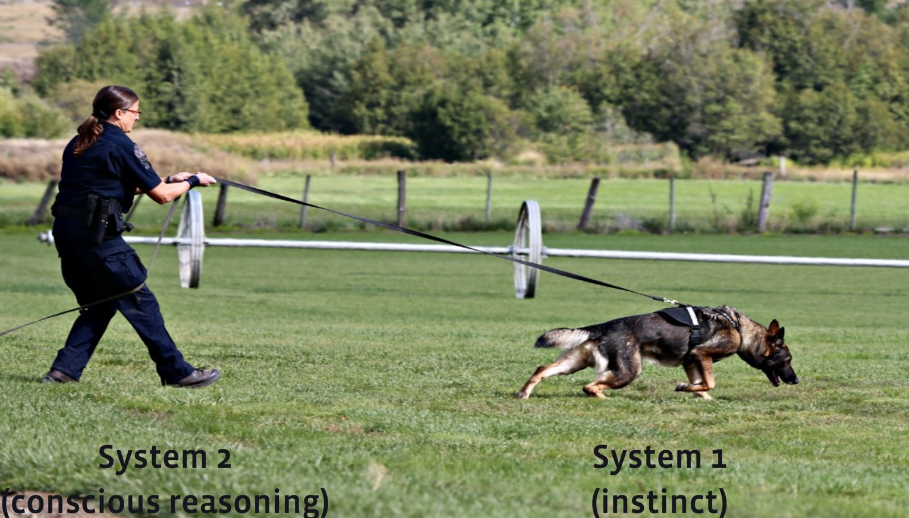

This note contains some ideas about hierarchical structure in perception, judgment and decision-making that I haven’t seen explained clearly elsewhere.
1 Summary

A model of encapsulated inference (“bloodhound”). Many puzzling phenomena in perception, judgment, and decision-making can be explained if we assume that initial judgments are formed pre-consciously in a way that both (a) incorporates information not accessible to the conscious brain, and (b) does not incorporate information that is accessible to the conscious brain. This “double encapsulation” of judgment is a necessary condition for biases to occur in a model of the sequential aggregation of information. As an analogy we can think of someone tracking a scent with a bloodhound on a leash.Suppose the dog has private information, i.e. it know things that the human does not: this itself will not lead to inefficient decisions. However when the human also has private information, known only to her, then there can be inefficient decision-making relative to the benchmark of decisions based on pooling information between the person and the dog.
Applied to perception. Many existing explanation of perceptual biases and illusions can be stated in terms of sequential aggregation of information. A prototypical case occurs when a perceptual cue that is ordinarily informative appears in a context where we are consciously aware that it is uninformative. Because the informational value of the cue is known only to the pre-conscious system the cue will still affect our judgment even when we know it to be irrelevant. There is an additional set of biases in judging the strength of raw sensory stimuli, e.g. the light faling on your eye. If the conscious brain does not have direct access to those stimuli then it will be reverse-inferred from the signals received from the encapsulated processes, which will induce spillovers between signals and result in contrast effects and cross-modal effects.
Applied to judgment. The model says that biases in factual and logical judgments (anchoring, framing, etc.) occur in the same way as perceptual biases. A prototypical bias occurs when an ordinarily-informative cue appears in a situation where we know consciously that it is irrelevant. In short: it is rational to trust our instincts, even though our instincts can be sensitive to features of the environment that we know to be irrelevant.
Applied to decision-making. We can treat decision-making as a special case of judgment, but we are judging relative value of each alternative. As in judgment we rationally trust our intuitions of value, despite being uncertain about what influences them. This can cause inconsistencies in decision-making when we are in unusual contexts. Many people have attempted to formalize decision biases (ambiguity aversion, prospect theory, etc.) but I believe those formalizations have limited value because (1) the biases’ fundamental causes are statistical regularities in the environment, and so the biases will be context-dependent rather than universal; and (2) people are self-reflective about their biases and act to correct them, so treating them as hard-wired into utility or perception will give misleading predictions.
I discuss a little the history of the study of human judgment. There have been many dramatic shifts in paradigm and many laws have been proposed which later were found to generalize poorly outside their original domain. There is still today a lack of consensus around the basic reasons why human judgment is good in some domains, bad in others.
Observation: in most cases human judgment is a close approximation of efficient inference. Computers rarely outperform humans when given the same information. In the history of psychology many discoveries of laws in human judgment have turned out to reflect, on closer inspection, optimal responses to the environment. However there are some cases where judgment makes simple mistakes – illusions, biases, anomalies – and so some theory is needed to explain why those happen.
Encapsulated preferences (“bulldog”). I briefly discuss a separate feature of decision-making: the existence of encapsulated preferences, distinct from encapsulated information. Encapsulated preferences are hard-wired instincts that are rational with respect to a broader set of goals given a limited information-set. As an analogy think of a person with a bulldog on a leash who pulls you where they want to go: now the person is influenced by their dog in two ways: by the information received and by the dog’s own preferences.
2 History
The study of human judgment is intellectual quicksand. Many historical paradigms for studying human thought and decision-making have left little trace. Many smart people spent decades working on theories that seem, in retrospect, confused and unnecessarily complicated. There are still multiple schools of thought on most major questions. I believe the most significant progress it the general acceptance that human judgment typically corresponds to optimal inference, discussed further below.
Two factors that might explain the lack of progress: (1) scientists’ own introspection becomes distorted such that it confirms their own theories; (2) the language we use to talk about perception and judgment is highly ambiguous, and this makes it possible for theories to survive a long time, appearing to accommodate many facts, while being in practice unfalsifiable.
Patterns have often failed to generalize. There are many standardized experimental tasks used to study judgment and decision-making: choice between stimuli (psychophysics); the Stroop task; the implicit association task; the Wason card task; the Iowa gambling task; learning with reinforcement; choice between gambles; two-player games.
Many laws have been proposed based on patterns found in these tasks, but there has been a consistent failure for these patterns to generalize outside the specific tasks, and even within these tasks the laws have often been found to be sensitive to minor tweaks of context, e.g. instrumental conditioning, lateral inhibition, probability-weighting, loss-aversion, reciprocity. One interpretation is that behavior is very context-sensitive, and generalization is difficult. Another interpretation, which I think is the principal explanation, is that behavior is typically well-calibrated for the cues in a given situation, meaning that behavior in a given situation reveals more about the statistics of that situation than about the wiring of decision-making processes.1
1 I give a more detailed argument for this interpretation of the history of psychology in The Repeated Failure of the Laws of Behaviour, and in Relative Thinking.
3 A Model of Inference
\[\xymatrix@R-2pc{ & \boxed{x_{1}}\ar[dddr] \\ & \boxed{x_{2}}\ar[ddr] \\ & \boxed{x_{3}}\ar[dr] \\ v\ar[uuur]\ar[uur]\ar[ur]\ar[r]\ar[dr]\ar[ddr]\ar[dddr] & \boxed{x_{4}}\ar[r] & \hat{v}\\ & \boxed{x_{5}}\ar[ur] \\ & \boxed{x_{6}}\ar[uur] \\ & \boxed{x_{7}}\ar[uuur] \\} \]
Let us start with a model of judgment as rational inference. There is some unobserved fact about the world, \(v\), a set of observations which relate to that fact, \(\bm{x}=(x_1,\ldots,x_n)\), and an estimate formed by the brain using those observations: \[\hat{v}=E[v|x_1,\ldots,x_n].\]
A simple prediction of this model is that influences on judgment of \(v\) should correspond to regularities in the world, i.e.:
\[\utt{\frac{d\hat{v}}{dx_i}(\bm{x})>0}{cue $i$ positively affects}{judgment of value} \iff \utt{\text{corr}(v,x_i|\bm{x}_{-i})>0}{cue $i$ is positively associated}{with value, all else equal}. \]
Testing the model. The model’s predictions depend on the joint distribution of observed and unobserved characteristics in the decision-maker’s ordinary environment, \(f(v,\bm{x})\). This distribution can be difficult to credibly measure, however there have been many cases where laboratory findings about judgment turn out to be neatly rationalized by correlations in the world:
| influence on judgment | correlation in world |
|---|---|
| Blue objects look more distant | Distant objects are bluer (Rayleigh scattering) |
| Cold objects feel heavier | Heavier objects transfer more heat |
| People repeat rewarded actions | Rewards are correlated over time |
| Random rewards cause more persistence | Probability of reward is correlated |
In each of these cases psychologists initially discovered an influence on judgment (\(\frac{d\hat{v}}{dx_i}\)), and proposed a mechanical explanation, e.g. based on how neurons are wired. Subsequently it was discovered that the influence on judgment explanations noticed that the influence could be rationalized by some correlation in the world. We can test these explanations by altering the context, finding a situation where we expect the real-world correlation between \(x_i\) and \(v\) to reverse, and we predict that the influence on judgment will reverse. Some examples of successful tests: (1) cold objects feel heavier, but hot objects feel heavier too, and this is consistent with the real-world association, because the effect of weight on heat-transfer depends on the difference from skin temperature. (2) when a rat finds a reward in a maze, it is then less likely to follow the same path subsequently (in contradiction to reinforcement learning), intuitively because they expect the food to be gone, i.e. they expect a negative correlation between past-rewards and future-rewards, instead of a positive one.
Feldman (2013):
“[Bayesian] optimality helps explain why the perceptual system, notwithstanding its many apparent quirks and special rules, works the way it does— because these rules approximate the Bayesian posterior.”
So far we have discussed evidence that perception and judgment are consistent with efficient use of evidence. However there are some patterns which resist rationalization, and for those we need a deeper theory.
4 A Model of Encapsulated Inference (“Bloodhound”)
\[\xymatrix@R-2pc{ & \boxed{x_{1}}\ar[dr]\\ & \boxed{x_{2}}\ar[r] & \circ \ar[dr]\\ & \boxed{x_{3}}\ar[rr] & & \circ \ar[dr]\\ v\ar[uuur]\ar[uur]\ar[ur]\ar[r]\ar[dr]\ar[ddr]\ar[dddr] & \boxed{x_{4}}\ar[rru] & & & \hat{v}\\ & \boxed{x_{5}}\ar[r] & \circ \ar[urr]\\ & \boxed{x_{6}}\ar[ur]\\ & \boxed{x_{7}}\ar[uuurrr]} \]
The diagram shows a hierarchical model in which information is aggregated in stages, drawing on inputs that are not themselves directly accessible to the conscious brain.
The intermediate nodes can be thought of as automatic unconscious judgments – e.g. judgments about the distance of an object, the age of a person, or the value of a bottle of wine. The conscious brain only has access to those intermediate judgments, not the raw data, and it is this separation that can cause inconsistencies in judgment.
\[\xymatrix@R-2pc{ & \overbrace{}^{\text{low-level}}\\ & \boxed{x_{1}}\ar[ddr] & \\ & \ldots \\ & \boxed{x_{n}}\ar[r] & \hat{v}^1 \ar[dr]& \\ v\ar[uuur]\ar[ur]\ar[dr]\ar[dddr] & & & \hat{v}^2 & \\ & \boxed{z_{1}}\ar[urr] & \\ & \ldots \\ & \boxed{z_{n}}\ar[uuurr]\\ & \underbrace{}_{\text{high-level}}} \]
For simplicity I will assume just one encapsulated node (\(\hat{v}_1\)) and two types of cue: “low level” (available only to the encapsulated node), and “high level” (available only to the conscious brain, \(\hat{v}_2\)). A bias occurs when this sequential aggregation of information reaches a different conclusion than would occur if all information was pooled:
\[\utt{E[v|E[v|\bm{x}],\bm{z}]}{encapsulated}{inference} \neq \utt{E[v|\bm{x},\bm{z}]}{pooled}{inference}. \]
Roughly speaking a bias will occur only when 3 conditions are met:2
2 The model of doubly-encapsulated inference is formalized in my paper “Hierarchical Aggregation of Information and Decision-Making”.
- The encapsulated system receives information not expected by the conscious brain (\(\bm{x}\neq E[\bm{x}]\)),
- The conscious brain receives information not expected by the early system (\(\bm{z}\neq E[\bm{z}]\)),
- The two pieces of information interact, i.e. \(E[v|\bm{x},\bm{z}]\) is non-separable in \(\bm{x}\) and \(\bm{z}\).
What information is accessible to each stage?
There are two types of information that are likely private to early processing. I will give discuss evidence below that this information is mostly inaccessible to the conscious brain.
- Raw sensory experience - the intensity of stimulation on the retina, the skin, the ear canal.
- Associations between outcomes – e.g. the correlations between different cues which are used to make inferences.
The information private to the conscious brain is relatively abstract understanding of the situation.
As a metaphor we can think of a person leading a bloodhound on a leash. Both the person and the dog are trying to find the same object, but the dog’s private information is not accessible to the person except through how they pull on the leash, i.e. the dog’s interpretation of the information. In typical cases the encapsulation of information does not cause problems: the person simply follows where the dog leads. However when the person is aware of additional context important in interpreting the bloodhound’s own information (i.e. there is an interaction) then the person will make mistakes relative to what they would have known if they’d been aware of all the dog’s information.
The idea that judgment is encapsulated or modular is not new. It’s been argued by Helmholtz (1866), Pylyshyn (1980), Fodor (1983), Sloman (1996). However most discussion concentrates on the modules using a subset of the information available to the conscious brain, explaining biases in our automatic judgments, but not biases in conscious judgments. I put relatively more emphasis on the existence of information accessible only to the modules, which makes distinctive predictions about when reflective judgments will exhibit biases (I will call this “doubly encapsulated” processing of information).3 4
3
4
Why would information be encapsulated? Mammalians brains have been evolving for 65M years while the human forebrain grew rapidly in the last 200,000 years. It seems likely that our systems for conscious reasoning are somewhat separated from systems for automatic judgment.
4.1 Implications of Encapsulated Inference
Here I givae the basic predictions of the model, in subsequent sections I discuss evidence relevant to these predictions from perception, judgment, and decision-making.
Judgment will degrade when presentation is unusual. We have very accurate judgments about cases which we have experience with but judgment degrades when some high-level information becomes relevant to interpretation. E.g., judgment will degrade when the same information is available but presented in an unusual way – upside-down, back to front, inverted.
Judgment will be sensitive to irrelevant features. Judgment will be sensitive to a cue which the subjects knows to be irrelevant when (a) that cue is usually relevant in similar situations; (b) the fact that the cue is irrelevant in this situation is high-level information, not accessible to the encapsulated system.
Judgment of hypotheticals will be poor. We will have poor ability to state how our judgment would change if one of the cues changed. E.g.: would this drawing look more like your cousin if the nostrils were more flared? Would you judge this candidate the same way if they were a woman as if they were a man? These are objective questions about your own judgments, but if judgment is encapsulated then people may give inaccurate answers to these questions.
Judgment will be sensitive to comparisons. When someone is judging two objects at the same time the conscious brain will have access to two encapsulated judgments, and therefore will learn something about what cues influences judgment. Thus we should expect to see systematic comparison effects which will reveal the nature of the information that is encapsulated. We also should see irrelevant-influences affect judgment in between-subjects, but not in within-subjects, experiments.
Persistence of biased intuitions. Even when we are consciously aware that an encapsulated judgment is incorrect the encapsulated system will still produce that inference, i.e. people retain a subjective perception which they know to be false (e.g., even after you learn that an illusion is misleading it still looks that way).
5 Perception
5.1 Basic facts
People are good judges of objects in the world.5 We are very good at judging the distance, size, or weight of an object, recognizing a face or a scene. Computers have only recently become comparable to humans after decades of dedicated work.
5 How various visual cues affect the judgment of distance.
People are poor judges of low-level perceptual stimuli. When asked to judge the magnitude of a raw sensation people are generally poor judges: e.g. comparing the brightness of two lights, the shade of two colours, the length of two lines. For computers these tasks are trivial.
There exist a large set of perceptual illusions. Psychologists have collected a diverse set of perceptual illusions in which people make predictable mistakes in reporting raw sensations (Muller-Lyer, Ebbinghaus, McGurk, etc.). There are still multiple active schools of thought in explaining most of these illusions.
5.2 Predictions of Encapsulated Inference
We can give a simple model of encapsulated inference:
- Early perceptual processes infer real-world values (\(v\)) using information about raw sensations (\(x\)), and about associations between sensations and value.
- Biases in judgment about the world occur because the early processes do not have access to high-level information available to the conscious brain (\(z\)).
- Biases in judgment about raw stimuli occur because the conscious infers the value of stimuli from the outputs of the early processes \(\hat{v}_1\).
It is useful to make a distinction between raw sensations and their causes in the world. The causes can then be subdivided into value and noise, where “value” represents something of interest to the organism.
| sensation (\(x\)) | value (\(v\)) | noise (\(e\)) |
|---|---|---|
| light on retina | reflectance of object | illumination |
| size on retina | size of object | distance of object |
| pressure on hand | weight of object | sensitivity of hand |
| oriention on retina | orientation in world | orientation of head |
| motion on retina | motion of object | motion of eye |
This gives us a series of predictions:
Sensitivity to presentation. Peoples’ ability to judge and recognize stimuli are notably worse when the stimuli are presented in a way that we’re not accustomed to: e.g. upside down, inverted, tinted, or back to front.6
6 e.g. Valentine (1988), Galper (1970), Kemp et al (1990).
Influence of high-level context. It’s useful to distinguish three different aspects of high-level context, and the predictions of double encapsulations:
\[\begin{aligned} \frac{d\hat{v}^1}{dz} &&& \text{contextual influences on automatic judgment of world}\\ \frac{d\hat{v}^2}{dz} &&& \text{contextual influences on conscious judgment of world}\\ \frac{d\hat{x}^2}{dz} &&& \text{contextual influences on conscious judgment of sensations} \end{aligned} \]
The double-encapsulation theory predicts that automatic judgments about the world are independent of contextual influences (\(\frac{d\hat{v}^1}{dz}=0\)), while final judgments of both are dependent (\(\frac{d\hat{v}^2}{dz}\neq0\), \(\frac{d\hat{x}^2}{dz}\neq 0\)).
I believe that this is broadly consistent with the empirical evidence:
- perceptual inferences are resistant to modulation by contextual information, except for attention effects,
- considered judgments of both sensations and values are commonly influenced by contextual information.7.
7 Firestone & Scholl (2016, BBS)
8 Cross-modal influences are often been cited as evidence against the encapsulation of perception, because they show influences across perceptual areas. However the fact that they show systematic errors in assessment of sensations demonstrates the existence of vertical encapsulation (i.e. lack of direct access to raw stimuli), at the same time as they show that the limits of horizontal encapsulation.
Judgment of raw sensations. Because the conscious brain does not directly observe the raw stimuli, it must infer them from the encapsulated system’s outputs: \(E\hat{x}_1=[\hat{x}_1|\hat{v}^1]\) and \(\hat{x}_2=E[\hat{x}_2|\hat{v}^1]\). This predicts cross-modal effects in judgment of sensations, where one sensation influences estimate of another sensation:8
\[\underbrace{\frac{d\hat{x}_1}{dx_2}}_{\text{cross-modal}\atop\text{effect}} \propto \underbrace{corr(x_1,v)}_{\text{diagnostic value of $x_1$}} \Big/ \underbrace{corr(x_2,v).}_{\text{diagnostic value of $x_2$}} \]
This is consistent with many laboratory examples showing “cross-modal” effects, where one stimuli (e.g. auditory) is influenced by some other stimuli (e.g. visual).
Examples fitting this pattern: (1) the McGurk and anti-McGurk effects; (2) the Stroop effect; (3) confusing motion of beeps and flashes; (4) confusing numerosity of beeps and flashes; (5) phoneme restoration; (6) assimilation to expectations - proofreaders’ errors; (7) Simon interference - response location & stimulus location.
Contrast effects in shade, contrast, hue, and size. The central circle is identical in each case.
Application: contrast and assimilation effects. A common finding in perception is a contrast effect, where some quality appears less-intense when placed next to a more-intense neighbor, although we also observe assimilation effects (the opposite) in some circumstances. I argue that (1) contrast effects in real-world perception are due to rational inference; (2) contrast effects in raw sensory stimuli are byproducts of double-encapsulation.
Suppose there are two neighboring objects, each with unobserved value (\(v_1,v_2\)) and additive noise:
\[\underbrace{\binom{x_1}{x_2}}_{observed\atop signal} =\underbrace{\binom{v_1}{v_2}}_{unobserved\atop value} +\underbrace{\binom{e_1}{e_2}}_{unobserved\atop noise}. \]
If everything is normally distributed then we have the following: \[\underbrace{\frac{dE[v_{1}|x_{1},x_{2}]}{dx_{2}}}_{\text{assimilation/contrast effect}} \propto \underbrace{\text{corr}(v_1,v_2)}_{\text{correlation}\atop\text{in values}} -\underbrace{\text{corr}(e_1,e_2)}_{\text{correlation}\atop\text{in noise}}. \]
In words this implies we expect an “assimilation” effect when the value is more correlated than the noise, and a “contrast” effect when the noise is more correlated than the value.
The equation above describes rational inferences of the encapsulated system about real-world values, but we additionally observe that contrast and assimilation effects occur in judgment of raw sensations, and for that reason they can properly be called “biases” or “illusions” relative to the full-information case. If we assume the conscious brain infers the sensations from the posteriors of the encapsulated system (\(\hat{x}_1\propto \hat{v}_1^1\)), then we get the same comparative static:
\[\frac{d\hat{x}_1}{dx_{2}}\propto \text{corr}(v_1,v_2)-\text{corr}(e_1,e_2).\]
I believe this gives a good account of the existence of contrast and assimilation effects across a range of cases:
- Adelson (1993) gives a series of examples demonstrating these effects in lightness illusions: contrast effects occur when context implies that noise is more correlated than value, and assimilation effects occur when context indicates that value is more correlated than noise.9
- When judgment is affected by a dissimilar stimulus (cross-modal effects), contrast effects will tend to occur when the additional cue is associated with the stimulus, assimilation effects will occur when it is associated with the value.
- These biases will tend to be smaller for more automatic responses - e.g. grasping responses - insofar as they receive signals prior to high-level processing.
9 Some papers also find Bayesian assimilation with very noisy stimuli, which I think is also consistent, but need more argument.
Reproduction. People find it easy to recognize patterns but hard to reproduce them, for example to paint a picture or to transcribe a melody. This is consistent with the model above insofar as the recognition is done pre-consciously. The model also predicts certain biases in reproduction, e.g. that people will tend to fail to account for shadows when they do a drawing, because they are inferring the raw stimuli \(x\) from the inferred object \(v\), and the brain’s inference has discarded most of the information it considers to be noise, such as illumination.
Additional notes.
- Differences in estimand. We have assumed that the encapsulated system is estimating the same quantity that the conscious brain is trying to estimate, \(v\). In many cases the conscious brain will want to estimate some other quantity, and this discrepancy will cause a distinct type of bias. I think this accounts for the size-weight bias in which people judge a larger object to be lighter, all else equal: if the encapsulated system is inferring the density of an object (from size and weight), and passing that estimate to the conscious brain, this would account for a negative effect of size on conscious estimates of weight.
- Bimodal posteriors. When there are two plausible but distinct interpretations of a given stimulus, i.e. when posteriors are bimodal, then people often alternate between perceiving the two interpretations, e.g. the Necker cube and the black/gold dress. It’s interesting that the cognitive system seems incapable of representing bimodal posteriors directly.
6 Judgment
6.1 Basic Facts
There are a set of well-known judgment illusions. There are a large set of simple judgment questions which people give consistently wrong answers to.
- Logical judgment: bat-and-ball, Linda, Monty Hall, mathematics problems on exames.
- Factual judgment: anchoring, joint-separate inconsistencies.
There are many proposed explanations of these biases but there is still relatively little consensus.
People are generally poor at making statistical generalizations about features. A variety of laboratory tests give people a set of cases and ask them to either (a) judge the strength of correlation between two features, or (b) predict an unobserved feature of a case given the observed features. People are often much worse than simple computer programs at performing these tasks.
Judgment in some domains can be very accurate very accurate. People can learn extremely subtle judgments when playing chess and Go, such that computers have only been able to beat them relatively recently.10 Other domains are harder to benchmark but it seems fair to say that judgment can be finely calibrated in domains such as interpersonal emotional judgment, medical diagnosis, music or literature.11
10 Playing a game could be seen as a combination of judgment and decision-making, but because every player shares essentially the same preferences (they prefer to win) it’s informative about judgment.
11 Kahneman and Klein (2009) say that human judgment tends to be good when subjects have (i) a lot of experience, and (ii) quick feedback.
6.2 Judgment and Encapsulated Inference
The encapsulated inference model says that judgments are largely instinctual and we have limited introspection into what determines them, e.g. when we are guessing the price of a good, judging the likelihood of an event, judging the trustworthiness of a person, we rationally trust our instincts. This has a number of consequences.
Limited introspection. We have limited ability to explain our judgments, e.g. to formalize them in a way that a computer could reproduce them.12 The history of human sciences is consistent with this: e.g. linguists have worked for centuries on finding the rules which make a sentence grammatical, formalizing knowledge that we all posess intuitively.
12 There is a long debate on what evidence would establish unconscious knowledge. Experimentalists have shown that subjects can learn a pattern but have trouble describing it. Critics have said (a) the subjects may have learned a different pattern but with the same extension (Quine), or (b) the questions asked of subjects are insufficiently detailed. In my view the problem is in the design of the experiments: implicit knowledge can be defined behaviorally, by observing when low-level and high-level information fail to be integrated.
Hypothetical questions. The model predicts that people will be unable to accurately answer hypothetical questions about their own judgments, e.g.: Would you value this bottle of whisky the same if it had a different price on it? Would you like this house as much if it was a different colour?
Influence of irrelevant cues. A common finding is that judgment is influenced by irrelevant cues, i.e. when told to ignore some fact people will still be moved by it. This occurs in the model when (1) the cue is integrated into preconscious judgments, (2) the conscious brain does not know how heavily the cue is weighted, and so cannot account for it.
Effect of comparisons. When two judgments are being made at the same time – e.g., two items are being judged – then the conscious decision-maker will learn more about the unconscious knowledge. The patterns of comparison effects will reveal the nature of implicit knowledge.
Internal consistency. We should expect that judgment anomalies will disappear in within-subject studies because the decision-maker becomes aware of the inconsistency and adjusts their judgments.
Consistency of biases. A lot of academic literature tries to identify biases in judgment. In our analysis biases will be caused by correlations in the environment, and so we should expect them to vary or reverse from one environment to the next, and indeed we find that many biases reverse sign:
- the “contrast effect” vs the “assimilation effect”
- the “gambler’s fallacy” vs the “hot hand fallacy”
- the “recency effect” vs “confirmation bias”
- “overweighting of low probabilities” vs “neglect of rare events”
Effect of incentives. We should see that incentives don’t materially affect biases, beyond the point where they simply get the person to pay attention. This is in contrast to inattention-based theories.
Persistence of mistaken judgments. The encapsulated-inference theory predicts that after someone learns that a judgment is incorrect then the feeling will persist, because the encapsulated system operates independently of higher-level knowledge. Thus in many of the classic judgment illusions, even when you know the right answer the wrong answer still has some intuitive draw.13
13 Sloman (1996) described this as Criterion S in arguing for two systems of reasoning: “a reasoning problem satisfies Criterion S if it causes people to simultaneously believe two contradictory responses.”
6.3 Implications for Improving Judgments
- Organize information in a way that helps your instincts to recognize patterns. For example (a) visualizing data so that visual-processing modules can be used to recognize patterns; (b) describe uncertainty in language that’s similar to the way that uncertainty is experienced: in terms of frequencies (“1 out of 5”) instead of probabilities (“20%”); (c) when looking for different interpretations of data, present it in an unfamiliar way in order to route around your unconscious inferences.
- Remove information that you know to be irrelevant. Your instincts will pick up on all available cues, even irrelevant ones. Thus attempting to ignore cues is likely to be ineffective, it’s better to physically remove irrelevant information.
- Ask yourself variations on the same question. – it will help to extract more information from your instincts.
7 Decision-Making [UNFINISHED]
7.1 Background
Motivating examples. Decision-making as a whole is an unwieldy topic, I’ll give some motivating examples focussed on economics:
- Choosing which wine to buy for dinner.
- Choosing how much of your income to spend vs save.
- Choosing whether to move cities for a job.
We don’t know much about what influences decisions. There are two polar schools of thought: (1) that decisions maximize some objective outcomes; (2) that decisions are buffeted by all sorts of influences – context, custom, time of day. Concretely, given variation in choices (e.g. savings rate, hours worked, charitable giving, education), we can decompose into variation in (1) budgets, (2) consequentialist preferences, (3) other non-consequentialist influences. Perhaps 1/3 each.
I will treat decision-making as judgment of value. i.e., people judge \(E[v|x]\), and choice is just selecting the outcome with the highest expected-value. This allows me to use the same framework as used in perception and judgment.
In decision-making there’s no objective standard. When discussing perception and judgment we can determine whether people are right or wrong, but it’s not the same with decision-making. Here we never observe the true value of things, we can only talk about inconsistencies among decisions, which itself requires making assumptions over what are reasonable preferences.
We have limited insight into our goals. I think we have limited insight both into ordinary value judgments (why do I prefer this coffee-cup to that one?), and into overarching goals (why do I marry? have children?). Philosophy, after thousands of years, still has not given us clarity regarding our tradeoffs between different ends (pleasure, moral imperatives and religious imperatives, providing for others, receiving love & receiving esteem).
Evolution must play some deep role in decision-making.14 As with other animals, humans’ decision-making must have been shaped to favor reproduction. However I believe there remains relatively little consensus on exactly how it affects decision-making, outside some specific areas.
14 I think there’s a common perception that although evolution must have importantly shaped human psychology, the evolutionary perspective has made few fundamental contributions to understanding psychology.
15 Some of this correlation can come from genetic effects or complementarity (when other people do X, then it’s in your interest to do X). However we see that when people migrate to a different culture in adulthood they retain a substantial part of their old preferences.
We must absorb most of our preferences.15 A large share of variation in decisions must be due to the preferences that we absorb when we grow up: taste in music, religion, political beliefs, career, who we marry, how many children to have, where to live, all must be heavily influenced by early experiences.
Preferences vs associations. Instead of estimating objective quantity, can estimate instrumental value, payoff, utility.
There are a set of known decision biases. There are some decision problems in which peoples’ choices consistently violate norms of rationality: Allais paradoxes, Ellsberg paradoxes, small-stakes risk-aversion, relative-thinking paradoxes, time inconsistency, anchoring effects, etc. There have been many attempts to fit these anomalies into generalizations about decision-making but there has been little consensus (e.g. with prospect theory, inattention, relative thinking).
7.2 Perspective from Encapsulated Inference
(1) Limited introspection. The model predicts that we have poor ability to introspect, e.g. to explain how different features influenced our decisions, or to predict what we would do in a different hypothetical situation.
(2) Sensitivity to associations. The evaluation of an outcome should be sensitive to whatever details are informative about value, and we still respond to those details when we’re aware that they are uninformative in the current situation, insofar as that awareness is not available to the encapsulated system. Thus we expect that people may have well-calibrated judgment for usual situations, but make bad or inconsistent decisions in unusual situations. This is my interpretation of many laboratory biases such as framing, anchoring, etc..
The decision-theory community has developed sophisticated logic to model many decision anomalies (ambiguity aversion, relative thinking, probability weighting). In my opinion most of these anomalies are due to associations which are very sensitive to context, and formal modelling is relatively unfruitful. The imperatives of publication have, I think, caused too much effort to be put in this direction: if anomalies are context-specific then research is less publishable, for that reason academics keep trying to come up with general theories, beyond the point of plausibility.16
16 Examples: (1) people avoid ambiguity not intrinsically, but because it’s associated with bad outcomes in certain classes of situation, and they seek out ambiguity in other situations; (2) people are influenced by the choice-set because it’s often informative about relative value, but the nature of the influence varies drastically between situations (discussion here).
17 More precisely: when stakes are high enough such that people no longer choose dominated alternatives, most of the between-person inconsistency in choices remains.
(3) Consistency within decisions. The model says that violations of rationality are mostly inadvertent. We therefore expect decisions to be consistent within situations, though they may be inconsistent between situations. This is consistent with laboratory evidence showing that people show large framing effects, but rarely choose dominated options.17
(4) Implicit knowledge is revealed in comparisons. 18 When two objects are evaluated side by side, that reveals some of the unconscious information to the conscious brain, and so we should expect systematic comparison effects. In choice, we can show that characteristic intransitivities reveal implicit knowledge, e.g. the intransitive cycle to the right (a “figure 8”) reveals an explicit preference for male over female, but an implicit preference for male over female. Similarly if we observe that some bundle of attributes is evaluated more highly when the comparison bundle becomes more similar in some respect, this reveals implicit knowledge about the attributes (either a positive implicit association about a shared attribute, or a negative implicit association about a non-shared attribute). Jon and I formalize this logic in our paper “Implicit Preferences”.
18 \[\xymatrix{ \binom{\text{female}}{\text{MBA}}\ar@{-}@/_.3pc/[dr]|(.4){\rsucc{135}} & \binom{\text{female}}{\text{PhD}}\ar@{-}@/^.3pc/[dl]|(.4){\rsucc{45}} \\ \binom{\text{male}}{\text{MBA}}\ar@{-}@/^.3pc/[u]|{\rsucc{270}} & \binom{\text{male}}{\text{PhD}}\ar@{-}@/_.3pc/[u]|{\rsucc{270}} }\]
8 Encapsulated Preferences
19 \[\xymatrix@R-2pc{ & \overbrace{}^{\text{low-level}}\\ & \boxed{x_{1}}\ar[ddr] & \\ & \ldots \\ & \boxed{x_{n}}\ar[r] & \circ \ar[dr]& \\ v\ar[uuur]\ar[ur]\ar[dr]\ar[dddr] & & & \hat{v} & \\ & \boxed{z_{1}}\ar[urr] & \\ & \ldots \\ & \boxed{z_{n}}\ar[uuurr]\\ & \underbrace{}_{\text{high-level}}}\]
Finally I introduce an additional model which I think is necessary to explain a lot of behaviours: encapsulated preferences, (as opposed to encapsulated information). As with the previous model I assume an informationally-encapsulated system, but now assume it has a direct effect on decision-making, e.g. as a simplification we could say the final decision is a weighted average of the output of the two systems:
\[\hat{v} = \lambda \underbrace{E[v|\bm{x}]}_{\text{low-level judgment}} + (1-\lambda) \underbrace{E[v|E[v|\bm{x}],\bm{z}]}_{\text{high-level judgment}}.\]
We could describe these low-level preferences as hard-wired, meaning that they intend to achieve the same value as high-level judgments (\(v\)), but they respond just to superficial stimuli, here \(\bm{x}\). Put another way: we have an irreducible preference for characteristics which have historically been associated with value. In some cases that association is learned over the course of our life (learned preferences), in other cases it will be over evolutionary history (evolutionary preferences). This has a number of predictions:
Decisions fail to maximize value when the association between superficial stimuli (\(\bm{x}\)) and value (\(v\)) is different from the historical association. This is a weaker condition than encapsulated inference, because here the high-level system cannot override the low-level inferences.
People will choose to avoid situations where low-level and high-level judgments conflict. This follows if the high-level system has the power to choose future situations: she’ll avoid situations in which she anticipates a divergence between the preference of the low-level and high-level system.
This is broadly consistent with some features of human behaviour:
We are tempted when in situations involving immediate benefits: food, sex, tiredness, addictive drugs. These can be interpreted as evolutionary fail-safes that exist to prevent conscious reasoning from doing too much harm. They are distinct from ordinary preferences in a utility function because they are only activated in certain contexts, and for this reason the conscious brain can work around them, just as an adult can work around a child by putting certain things out of view.
We have an aversion to things that are superficially unsafe. We dislike walking on a glass bridge even if we know it’s safe, we dislike drinking from vials marked “poison” even when we know it’s not poison, we dislike the smell of rotten meat even if we know there’s no danger. This has the same pattern as the examples above, but reversed.
Developmental pathologies are adaptive at an evolutionary timescale conditional on superficial information. There are certain diseases specific to civilization: myopia, allergies, obesity, crooked teeth. For each of these there are persuasive arguments that the developmental response is optimal given some superficial information about the situation, and so the pathology is caused by the divergence between evolutionary-scale associations and contemporary associations.
Nervous-system responses are optimal conditional on superficial information. Many bodily reactions are not under conscious control: heart-rate, sneezing, fever, pain, headaches. We can over-ride automatic responses, e.g. by taking medications, but we often don’t know whether it would be wise because we don’t have access to the private information used by the automatic system, and it’s resaonable to presume that its responses are optimal.
8.1 Additional Notes on Encapsulated Preferences
Puzzle: distortion of conscious reasoning. In many cases situations which activate a visceral temptation also seems to affect our conscious thoughts: we don’t just give in to temptations, we also rationalize it. In the dog metaphor it’s like having a very persuasive bulldog who can talk you into things. You might still avoid the situation but once in the situation you choose whole-heartedly. It’s unclear why we would reason in this way.
Evolved desires vs encapsulated desires. Should be careful not to confuse encapsulated preferences with a different relation, where evolution gives us a goal which we consciously strive for (eat sweet things, have sex) which are only proximal relative to the evolutionary goal of reproducing. Those proximal goals could still be ipmlemented in a single system which would make entirely consistent maximizing choices (but it would be maximizing an outcome that is only correlated with evolution’s goal).
Characteristic behaviors which reveal encapsulated preferences:
Preferences are stronger when made more salient. E.g., (1) more likely to choose a croissant when you smell it; (2) you’re scared by certain things only if you can see them, when giving blood you avoid looking at the needle; (3) you’re more likely to agree to have sex if you’re aroused. Just thinking about certain things can make us aroused or happy or scared, so we can strategically choose what to think about.
Making personal rules. We set a certain time to start & finish working; set a goal number of words to write each day; only getting ice-cream if you’ve been to the gym; setting a rule for how much money to save. Implies you don’t trust your future self, so you make up a rule, even though there’s no way to enforce it.
Strategic choices. We choose to avoid certain options. E.g., (1) buying a house to force yourself to save; (2) avoiding situations where you think you’ll be tempted. Formally you can call this “choice over choice sets”, and there’s a a fair amount of decision-theory on how multiple-selves can be identified if you can observe this kind of choice.
Effect of distraction. You are more likely to indulge in proximal goals when you are distracted - e.g. manipulation of cognitive load.
implicit preferences. More influenced by an attribute in less-direct choice sets.
Other variation in decision by context: Decisions made with salient outcomes, or abstract outcomes; decisions made under time pressure; decisions made with cognitive load; decisions made in advance; decisions over future choice sets; choices made in different moods, or after exerting willpower; decisions made directly or indirectly; from small or large choice sets; and attitudes which are expressed by involuntary responses (response time, skin conductance, pupil dilation).
8.2 Why would we have encapsulated preferences
Two types: (a) evolutionary proximal goals (sugar, sex, putrid smells); (b) learned proximal goals (coffee, wine, tobacco, learned food aversions).
Proximal preferences from evolution. A lot of human preferences make sense as proximal goals for achieving a long-run evolutionary purpose: when we get a kick out of doing X, it’s because doing X was selected for in our evolutionary history. These goals are in some sense hard-wired because people still do X even when it no longer makes any evolutionary sense to do it: (1) we enjoy sex even when it doesn’t lead to reproduction; (2) we like the taste of sugar even when we know it’s bad for us; (3) we get scared of snakes, spiders, of heights, of blood even when we see them behind glass - we are even scared of pictures of these things; (4) we are disgusted by smells associated with infection, even when we know there’s no risk of infection. (There are also arguments that some emotions - such as anger, jealousy, love - are hardwired for a slightly different reason - because they serve as commitment devices in social interaction - Trivers).
Why would these be hardwired? Or rather, instead of hardwiring preferences, why didn’t evolution hardwire beliefs? It would seem to be more efficient to just have innate knowledge: that snakes are dangerous, that sex leads to reproduction, that rotting meat is an infection risk. Then we could treat each of these things as means, not as ends. I guess there are two reasons: (1) perhaps it’s harder to preinstall knowledge than to preinstall preferences, because each brain grows differently; (2) perhaps it’s safer to preinstall preferences, to prevent them being overridden by a malfunctioning conscious brain which thinks it knows better.
Proximal preferences from learning. We often can explain peoples’ preference for X, because X has been associated with good outcomes in the past, yet people still choose X even when they are aware it no longer has those good associations. I.e., X has turned from a means into an end in itself. This can be described as a “habit”, “learned preference.” Some examples: (1) enjoying the smell of coffee, the taste of wine, or a cigarette, when those associations must be due principally to the psychoactive drugs that have been associated with them; (2) a learned phobia; (3) a learned food aversion, even when you know it’s irrelevant (e.g. chemotherapy patients develop aversions to whatever food they were eating during the chemotherapy).
It’s hard to answer why learned preferences should be hard-wired.
Different models which get at aspects of this type of behaviour: (1) a complementarity between a cue and consumption: the consumption becomes more valuable when exposed to an associated cue (Laibson); (2) a temptation cost - you have to pay a cost to not consume something when it is possible to choose it – (Gul and Pesendorfer) (3) preferences which depend on your state of arousal - e.g. willingness to be violent, have sex, changes preditably with context (Loewenstein on arousal).
9 Notes on Literature
Unconscious knowledge. I wrote a discussion of unconscious knowledge here. In short: there have been many proposals of how to identify unconscious knowledge or unconscious preferences over the last 150 years, but there remains little consensus.
Modularity / top-down influences. In the 1950s the “new look” school in psychology argued that peoples’ perceptions are distorted by their beliefs and expectations. There was then a reaction in the 80s and 90s: Fodor & Pylyshyn argued that perception is encapsulated, separated from expectations, & you need this to explain illusions. Both are right, and in fact two types of illusions from different types of private info. System 1’s private info causes theory-biased report of sensation. System 2’s private info causes expectations-ignorant perceptions.
Efficient coding, predictive coding, rational inattention. A general class of theories assumes that there is some kind of noise in the processing of information, so that the conscious brain makes inferences using a noisy signal about the stimuli \(x\). These models, like my model, assume an intermediary process, but one which does compression rather than inference, i.e. the signal minimizes error with respect to \(x\), instead of \(v\). I have further discussion elsewhere, but in short I think (1) efficient-coding theories do a poor job accounting for features of perception; (2) rational-inattention models do a poor job accounting for gross facts of judgment; and (3) it would be an inefficient design for the brain to pass compressed versions of raw stimuli (x), instead of inferences from those stimuli (v).20
20 I need to think more about the relationship with “predictive coding” theories (where only the delta from the expectation is sent). Friston’s “free energy” theory is related to these theories but I haven’t been able to properly understand it.